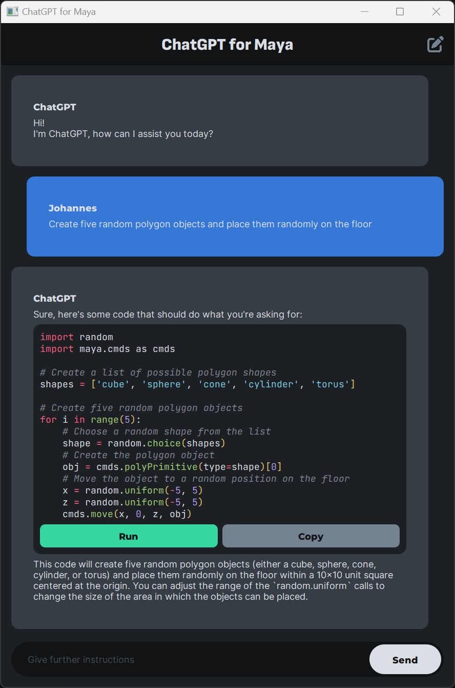

Tap into the power of ChatGPT without leaving Maya
Take your Autodesk Maya workflow to the next level with ChatGPT.
This innovative tool provides quick and efficient assistance in brainstorming, problem-solving and technical tasks, helping you create stunning masterpieces with ease.